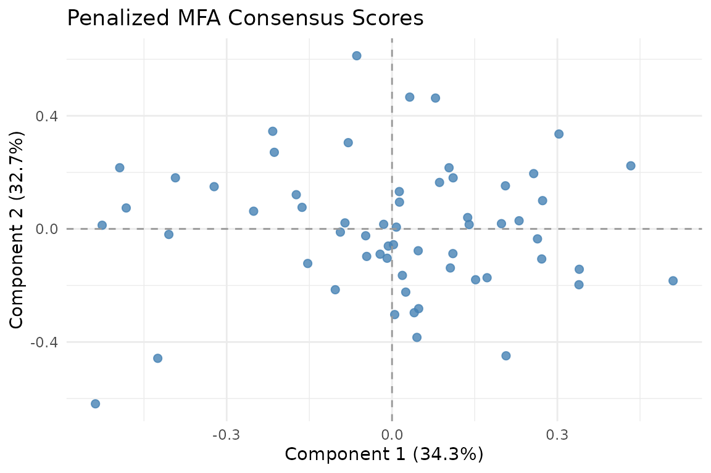
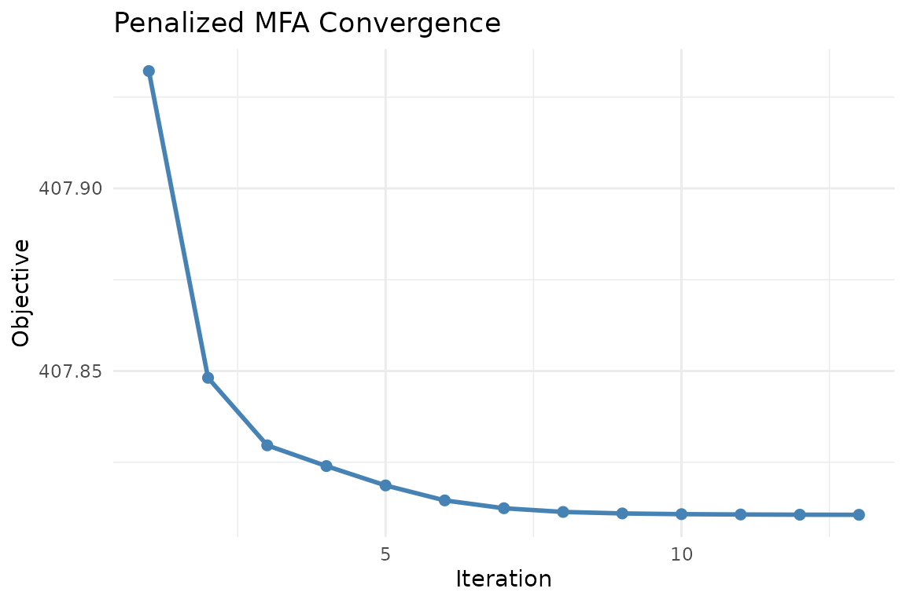
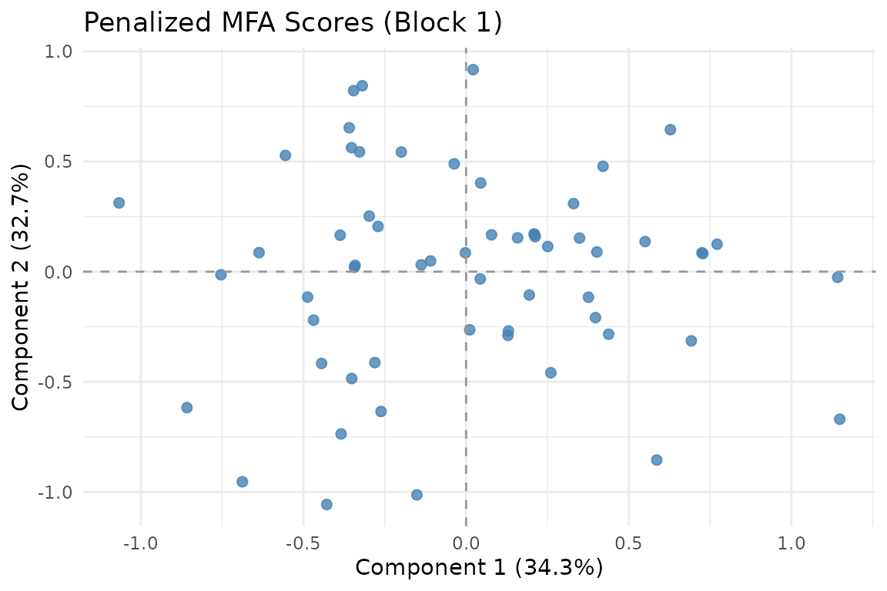
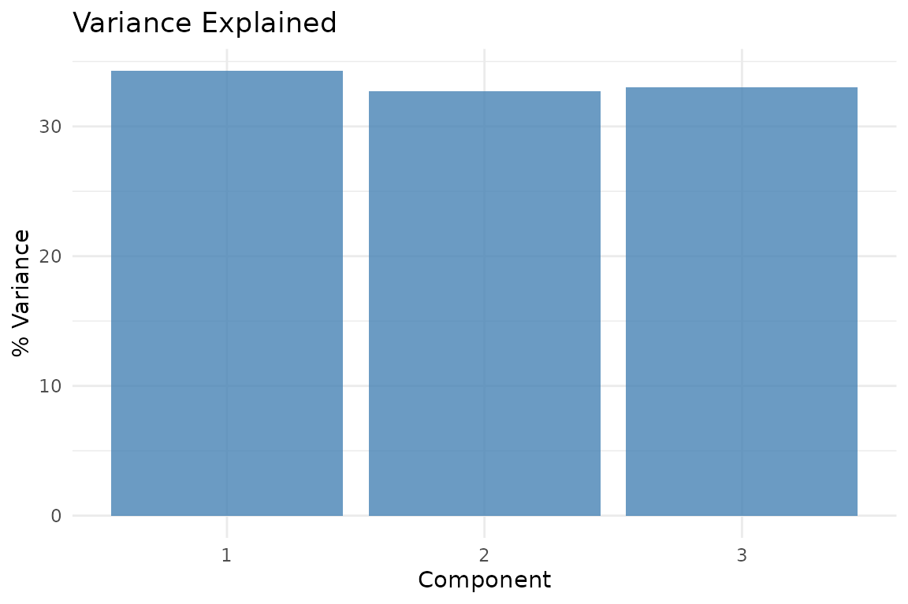
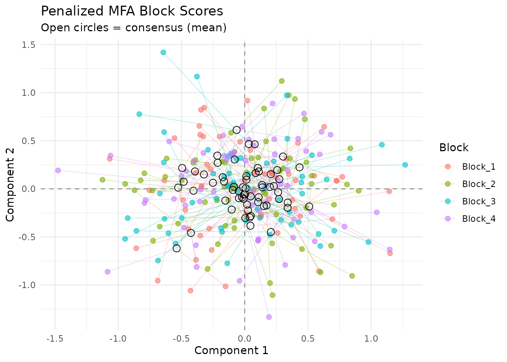
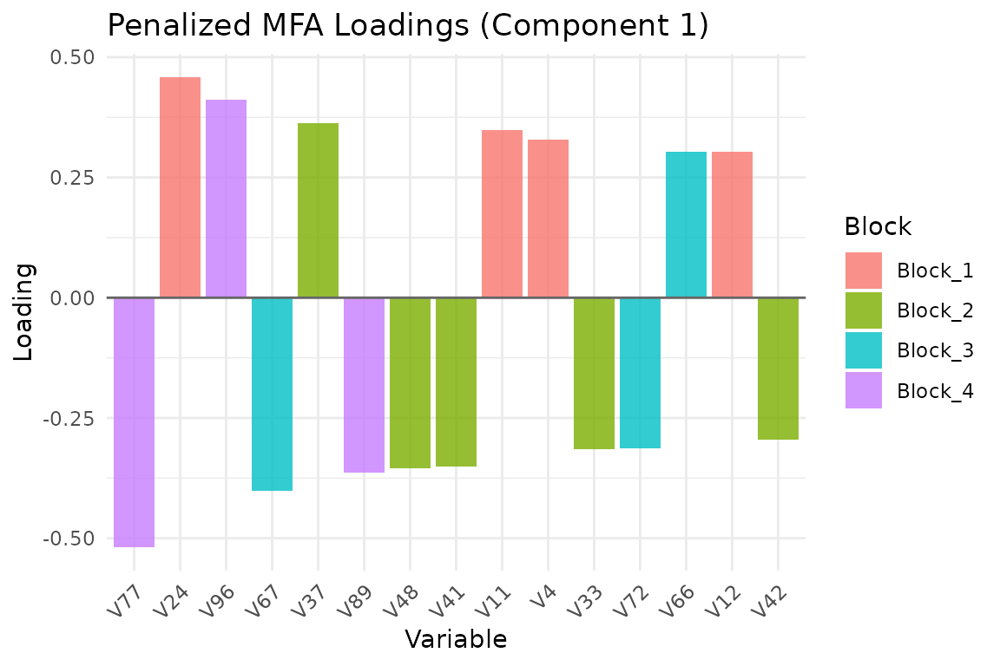

Why Penalized MFA?
Standard mfa() normalizes blocks so they contribute
equally, but it places no constraint on the loadings
themselves. Each block’s loadings can point in completely different
directions. When you expect blocks to share a similar variable structure
— say, the same brain regions measured under different conditions — you
want corresponding variables to load similarly across blocks.
Penalized MFA adds a regularization penalty that encourages loading
matrices to be similar, while still allowing each block to express its
unique structure. The lambda parameter controls the
trade-off: lambda = 0 recovers independent per-block PCA;
large lambda forces near-identical loadings.
Quick start
sim <- synthetic_multiblock(
S = 4, n = 60, p = 25, r = 3,
sigma = 0.3, seed = 42
)
sapply(sim$data_list, dim)
#> [,1] [,2] [,3] [,4]
#> [1,] 60 60 60 60
#> [2,] 25 25 25 25Fit Penalized MFA with a moderate penalty:
fit <- penalized_mfa(
sim$data_list, ncomp = 3,
lambda = 1, max_iter = 20
)
fit
Consensus scores from Penalized MFA. Each observation is positioned by the mean of its block-specific scores.
How it works
Penalized MFA estimates orthonormal loading matrices for each block by minimizing:
The first term is reconstruction error; the second encourages similarity among block loadings. The optimization uses Riemannian gradient descent on the Stiefel manifold (the space of orthonormal matrices).
Convergence
plot_convergence(fit)
Objective value over iterations. The penalty drives blocks toward shared loading structure while the reconstruction term keeps them data-faithful.
Visualization
Consensus scores
The consensus score is the mean of per-block scores. You can also view individual block scores:
autoplot(fit, block = 1)
Scores from block 1 alone.
Variance explained
plot_variance(fit, type = "bar")
Variance explained by each consensus component.
Partial factor scores
Compare how blocks position the same observations:
plot_partial_scores(fit, connect = TRUE, show_consensus = TRUE)
Partial factor scores. Each color is a block; lines connect to the consensus. The penalty shrinks these distances compared to standard MFA.
Variable loadings
plot_loadings(fit, type = "bar", component = 1, top_n = 15)
Top 15 variable loadings on component 1, colored by block.
Penalty methods
Three penalty formulations are available:
"projection"(default): Penalizes the distance between block-specific projection matrices . Rotation-invariant — only the subspace matters, not the basis."pairwise": Penalizes all pairwise distances between loading matrices directly. Sensitive to rotation."global_mean": Penalizes each block’s deviation from the mean loading matrix.
# Projection penalty (default, recommended)
fit_proj <- penalized_mfa(sim$data_list, ncomp = 3,
lambda = 1, penalty_method = "projection")
# Pairwise penalty
fit_pair <- penalized_mfa(sim$data_list, ncomp = 3,
lambda = 1, penalty_method = "pairwise")Choosing lambda
The penalty strength lambda is the key tuning
parameter:
-
lambda = 0: No penalty. Each block gets its own independent PCA loadings. -
Small
lambda(0.01–0.1): Gentle encouragement toward similar loadings. -
Moderate
lambda(1–10): Strong similarity constraint while still allowing block-specific variation. -
Large
lambda(100+): Forces near-identical loadings across blocks.
A practical approach is to compare reconstruction error across a grid of lambda values and pick the knee of the curve:
lambdas <- c(0.01, 0.1, 1, 10, 100)
fits <- lapply(lambdas, function(lam) {
penalized_mfa(sim$data_list, ncomp = 3, lambda = lam, max_iter = 20)
})Optimizer options
By default, Penalized MFA uses the Adam optimizer on the Stiefel manifold. You can also use plain gradient descent:
fit_gd <- penalized_mfa(
sim$data_list, ncomp = 3, lambda = 1,
optimizer = "gradient",
learning_rate = 0.001,
max_iter = 50
)When to use Penalized MFA
Penalized MFA is appropriate when:
- You have multiple blocks with the same variables (or matched variables)
- You expect blocks to share similar loading structure
- You want to control the similarity-reconstruction trade-off explicitly
- Standard MFA loadings are too noisy or divergent across blocks
Penalized MFA is not appropriate when:
- Blocks measure entirely different variables (the loading penalty is meaningless)
- You need classical MFA normalization guarantees (use
mfa()) - Your goal is block-level outlier detection (use
covstatis())
Next steps
-
vignette("mfa")— Standard MFA without loading penalties -
vignette("ipca")— iPCA, an alternative integration approach -
?penalized_mfa_clusterwise— Cluster-wise penalized MFA